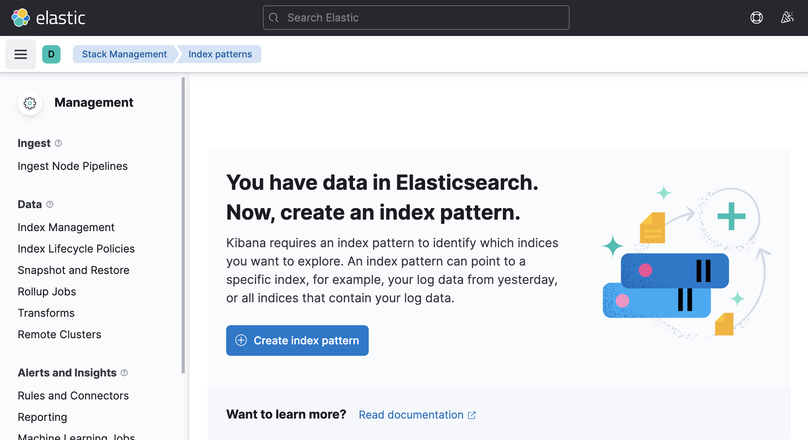
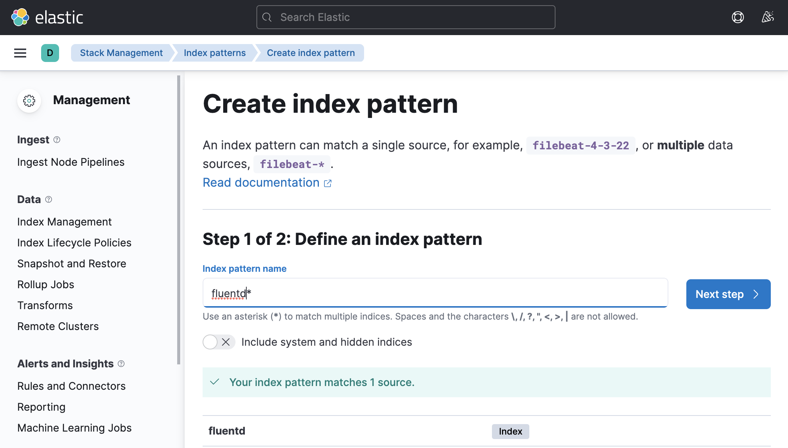

Lab 5 - Logging with EFK Stack
In a complicated distributed system such as Kubernetes, we will have different logs for different components, and extracting insights from logs can be a daunting task. The EFK stack (ElasticSearch, FluentD, Kibana) can help make this task easier.
In this Lab, we are going to deploy EFK stack.
Deploy robot-shop app that emits logs to stdout in JSON format.
We will then deploy Cloud Native FluentD logging agent and configure Input Plugin /var/log/containers folder
(location used by docker daemon on a Kubernetes node to store stdout from running containers)
and tail Input Plugin.
And configure FluentD Output Plugin host and logstash_prefix to send to logs to ElastackSearch,
under logstash-* prefix.
Objective:
- Install Elasticsearch and Kibanna
- Deploy online boutique Application
- Install and Configure FluentD
- Configure ElasticSearch with FluentD
1 Install Elasticsearch and Kibana¶
1.1 Elasticsearch Installation¶
Create a Kubernetes Cluster in your lab environment. Make sure cluster has nodes with 4 cores each.
Create a new namespace for EFK stack:
kubectl create ns efk
Install Elasticsearch using Helm:
helm repo add elastic https://helm.elastic.co
helm install elasticsearch elastic/elasticsearch -n efk
Check the status of deployment:
kubectl get pods --namespace=efk -l app=elasticsearch-master -w
1.2 Kibana installation¶
Deploy Kibana with Helm:
helm install kibana elastic/kibana -n efk
Set up port forwarding for temporary access to Kibanna:
kubectl -n efk port-forward deployment/kibana-kibana 5601
Access Kibana from your browser at http://localhost:5601 or from cloud shell Web Preview (Make sure the port number matches)
For permanant access to Kibana, modify the service type form ClusterIP to LoadBalancer:
kubectl -n efk patch svc kibana-kibana -p '{"spec": {"type": "LoadBalancer"}}'
1.3 Fluentd installation¶
Deploy Fluentd with Helm:
helm repo add fluent https://fluent.github.io/helm-charts
helm repo update
helm install fluentd fluent/fluentd -n efk
2 View Logs from Kibana¶
Locate Kibana Public IP
kubectl get svc -n efk | grep kibana
Launch the Kibana web interface
http://<Public_IP>:5601
You should see your Kibana interface

Click on Discover in the left-hand navigation menu. 
Create an index pattern. Use fluentd* as the index pattern name. More documentation can be found here

Next, configure which field Kibana will use to filter log data by time. In the dropdown, select the @timestamp field, and hit Create index pattern.
Now, Click on Discover again, you should see logs from your Kubernetes cluster. Try different filters, see how you can navigate logs and find valuable information about the cluster.
3 Deploy a sample application¶
Deploy microservices application online boutique.
Create Namespace onlineboutique
kubectl create ns onlineboutique
Deploy Microservice application
kubectl apply -f https://raw.githubusercontent.com/Cloud-Architects-Program/microservices-demo/main/release/kubernetes-manifests.yaml -n onlineboutique
Verify Deployment
kubectl get all -n onlineboutique
4 Configure Fluentd for specific logs¶
In many cases, you only need your applications' logs being sent to your logging stack. To achieve this, Fluentd should be configured to only intake specific logs so that no resources are wasted.
Review sources configuration
kubectl get configmap -n efk fluentd-config -oyaml | grep -v "#" | grep -A20 01_sources.conf
01_sources.conf: |-
<source>
@type tail
@id in_tail_container_logs
@label @KUBERNETES
path /var/log/containers/*.log
pos_file /var/log/fluentd-containers.log.pos
tag kubernetes.*
read_from_head true
<parse>
@type multi_format
<pattern>
format json
time_key time
time_type string
time_format "%Y-%m-%dT%H:%M:%S.%NZ"
keep_time_key false
</pattern>
<pattern>
format regexp
expression /^(?<time>.+) (?<stream>stdout|stderr)( (.))? (?<log>.*)$/
Note
id: A unique identifier to reference this source. This can be used for further filtering and routing of structured log data
type: Inbuilt directive understood by fluentd. In this case, “tail” instructs fluentd to gather data by tailing logs from a given location. Another example is “http” which instructs fluentd to collect data by using GET on http endpoint.
path: Specific to type “tail”. Instructs fluentd to collect all logs under /var/log/containers directory. This is the location used by docker daemon on a Kubernetes node to store stdout from running containers
pos_file: Used as a checkpoint. In case the fluentd process restarts, it uses the position from this file to resume log data collection
tag: A custom string for matching source to destination/filters. fluentd matches source/destination tags to route log data
Step 2 Review Filter configuration
kubectl get configmap -n efk fluentd-config -oyaml | grep -v "#" | grep -A20 03_dispatch.conf
02_filters.conf: |-
<label @KUBERNETES>
<match kubernetes.var.log.containers.fluentd**>
@type relabel
@label @FLUENT_LOG
</match>
<filter kubernetes.**>
@type kubernetes_metadata
@id filter_kube_metadata
skip_labels false
skip_container_metadata false
skip_namespace_metadata true
skip_master_url true
</filter>
<match **>
@type relabel
@label @DISPATCH
</match>
Step 3 Review Dispatch configuration
kubectl get configmap -n efk fluentd-config -oyaml | grep -v "#" | grep -A20 03_dispatch.conf
03_dispatch.conf: |-
<label @DISPATCH>
<filter **>
@type prometheus
<metric>
name fluentd_input_status_num_records_total
type counter
desc The total number of incoming records
<labels>
tag ${tag}
hostname ${hostname}
</labels>
</metric>
</filter>
<match **>
@type relabel
@label @OUTPUT
</match>
</label>
Step 4 Review Output Plugin configuration
kubectl get configmap -n efk fluentd-config -oyaml | grep -v "#" | grep -A10 04_outputs.conf
04_outputs.conf: |-
<label @OUTPUT>
<match **>
@type elasticsearch
host "elasticsearch-master"
port 9200
path ""
user elastic
password changeme
</match>
</label>
Note
match: tag indicates a destination. It is followed by a regular expression for matching the source. In this case, we want to capture all logs and send them to Elasticsearch, so simply use **
type: Supported output plugin identifier. In this case, we are using ElasticSearch which is a built-in plugin of fluentd.
host/port: ElasticSearch host/port. Credentials can be configured as well, but not shown here.
To configure Fluentd to only send one namespace's logs to elasticsearch, modify 03_dispatch.conf so that only log files that matches onlineboutique namespace is labeled to be sent:
03_dispatch.conf: |-
<label @DISPATCH>
<filter **>
@type prometheus
<metric>
name fluentd_input_status_num_records_total
type counter
desc The total number of incoming records
<labels>
tag ${tag}
hostname ${hostname}
</labels>
</metric>
</filter>
<match kubernetes.var.log.containers.**_onlineboutique_**>
@type relabel
@label @OUTPUT
</match>
</label>
<match kubernetes.var.log.containers.**_onlineboutique_**> will filter out logs with _onlineboutique_. This configuration will only relabel the logs that matches the configuration as @OUTPUT. As specified in 04_outputs.conf, only logs labelled as @OUTPUT will be sent to elasticsearch.
Note that this is not the only way to configure fluentd to send one namespace's logs.